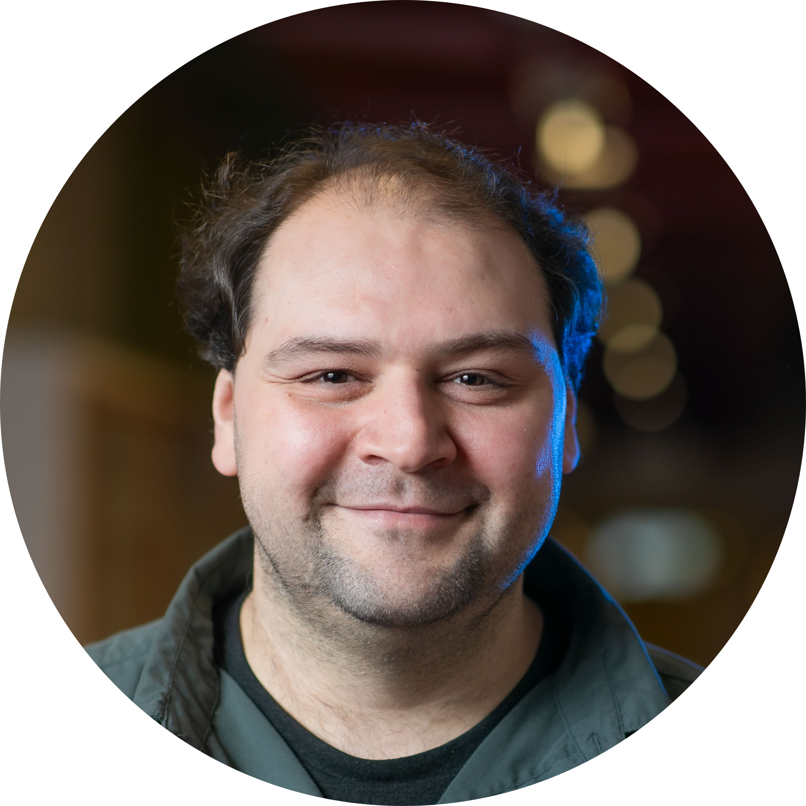

Michel Steuwer
I am a professor leading the chair of Compilers and Programming Languages at TU Berlin.
Michel Steuwer
I am a professor at Technische Universität Berlin and lead the chair of Compilers and Programming Languages. I am a member of the Institute of Software Engineering and Theoretical Computer Science in the Faculty IV - Electrical Engineering and Computer Science at TU Berlin.
Before joining TU Berlin, I was a lecturer (assistant professor) in the School of Informatics at the University of Edinburgh, a lecturer at the School of Computing Science at the University of Glasgow and a postdoctoral researcher at the University of Edinburgh. I received my PhD from the University of Münster in Germany.
You can download my CV here.
Research
I am interested in programming languages and compilers.
I have a particular interest in compiler design, optimization techniques, and programming languages for parallel programming, heterogeneous, and GPU computing.
Highlights
- Our ICFP 2020 paper has been selected as a ACM SIGPLAN Research Highlight in September 2021 and has been published as a Communications of the ACM Research Highlight in March 2023
-
Our POPL 2024 paper has been selected as one
of nine for the
MIT Programming Languages Review 2024 highlighting papers believed to have significant potential to shape the future direction of PL research - Best Paper Award Winner at CGO 2018 and SLE 2022
- 6 HiPEAC Paper Awards for our ASPLOS 2028, 2023, 2024, POPL 2024 (2x), and PLDI 2024 papers
- Most cited papers at ICFP 2015 and CGO 2017
-
Most downloaded research paper of the
Proceedings of the ACM on Programming Languages (PACMPL) with over 15,000 downloads from the ACM Digital Library
Team
PhD Students
-
Serkan Muhcu
Topics: Algebraic Effects, Functional Programming
-
Nicole Heinimann
Topics: E-Graphs, Machine Learning
-
Rudi Schneider
Topics: E-Graphs
-
Johannes Lenfers
Topics: Rewrite-based Optimizations, Autotuning
supervised with Sergei Gorlatch
-
Martin Lücke
Topics: MLIR, Control of Compiler Optimizations
-
Bastian Köpcke
Topics: Safe GPU Computing
supervised with Sergei Gorlatch
Former PhD Students
-
Dr. Xueying Qin
PhD Thesis: Studies Concerning the Meaning of Computer Programs
Now: Postdoctoral Researcher at the University of South Denmark
-
Dr. Rongxiao Fu
PhD Thesis: Type Systems for Safe Strategic Rewriting
Now: Researcher at Huawei Research, China
-
Dr. Federico Pizzuti
PhD Thesis: Efficient Code Generation for Irregular Applications with Lift
co-supervised with Christophe Dubach
Now: Senior Software Engineer at Huawei Research, Edinburgh, UK
-
Dr. Thomas Kœhler
PhD Thesis: Domain-Extensible Optimizing Compilers
Now: Researcher at CNRS, Strasbourg, France
-
Dr. Larisa Stolzfus
PhD Thesis: Stencil-based HPC Applications in Lift
co-supervised with Christophe Dubach
Now: HPC Benchmark Specialist at Eviden, UK
-
Dr. Toomas Remmelg
PhD Thesis: Automatic Performance Optimisation of Parallel Programs for GPUs via Rewrite Rules
co-supervised with Christophe Dubach
Now: Senior Compiler Engineer at ARM, Norway
-
Dr. Bastian Hagedorn
PhD Thesis: High-Performance Domain-Specific Compilation without Domain-Specific Compilers
co-supervised with Sergei Gorlatch
Now: Senior Compiler Engineer at NVIDIA, Germany
-
Dr. Michael Haidl
PhD Thesis: PACXX: a Unified Programming Model for Programming Accelerators
co-supervised with Sergei Gorlatch
Now: Senior Systems Software Manager at NVIDIA, Germany
-
Dr. Juan Jose Fumero
PhD Thesis: Accelerating Interpreted Programming Languages on GPUs with Just-In-Time Compilation and Runtime Optimizations
co-supervised with Christophe Dubach
Now: Research Fellow at the University of Manchester, UK
Publications
You can also find my publications on my dblp profile and my Google Scholar profile.
2025
-
The MLIR Transform Dialect: Your Compiler is more powerful than you think
CGO
 DBLP
DBLP
Talks
2022
-
Modern DSL Compiler Development with MLIR
Huawei TRC Innovation Summit 2022
Community Activities
Program Committees
- Program Committee Co-Chair of CGO 2024
- Program Committee Member of PLDI 2025, SLE 2024, Haskell 2023, Euro-Par 2023, CGO 2022, 2020, 2019, CC 2020, GPCE 2024, 2020, 2019, LCTES 2019, 2018, ICPP 2020, FHPNC 2021, 2020, HLPP 2020, 2019, 2018, 2017, 2016, DHPC++ Workshop 2019, 2018, and, IEEE ScalCom 2016
Artifact Evaluation Committees
- Artifact Evaluation Co-Chair of CGO 2021, 2020, 2019, 2018, CC 2021, 2020, and, LCTES 2019, 2018
- Artifact Evaluation Committee Member of ICFP 2017, CGO 2017, PACT 2016
Organization Committees
- General Chair of PPoPP 2024
- Steering Committee Member of CGO (since 2021) and PPoPP (2024)
- Local Organization Co-Chair of HiPEAC Computer Systems Week April 2019, Scottish Programming Language Seminar March 2018 and October 2019, and, UK Many-Core Developer Conference May 2016
Other Reviewing Activities
- External reviewer for journals: Communications of the ACM, ACM TODS, ACM TACO, ACM Computing Surveys, Science of Computer Programming Journal (Elsevier), The Journal of Supercomputing (Springer), and, Software: Practice and Experience (Wiley)
- External reviewer for conferences: MLSys, CC, CGO, Euro-Par, EuroMPI, CC-Grid, and, ParCo
- Reviewer for funding bodies: UK Engineering and Physical Science Research Council (EPSRC), German Research Foundation (DFG), German Federal Ministry of Education and Research (BMBF), Netherlands Organisation for Scientific Research (NWO), and, Natural Sciences and Engineering Research Council of Canada (NSERC)